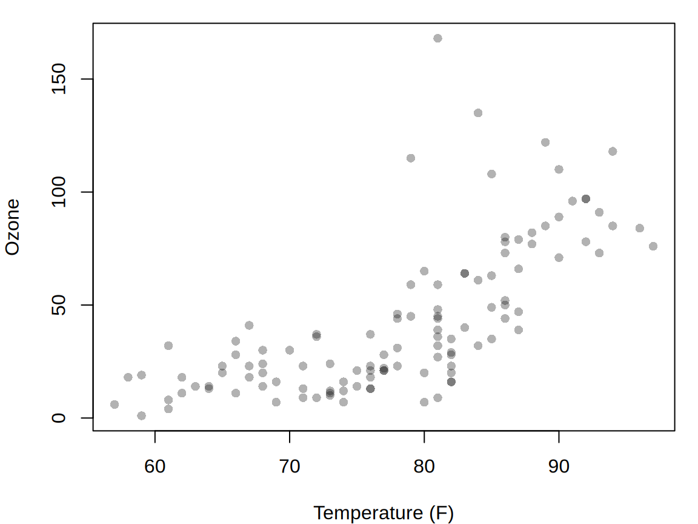
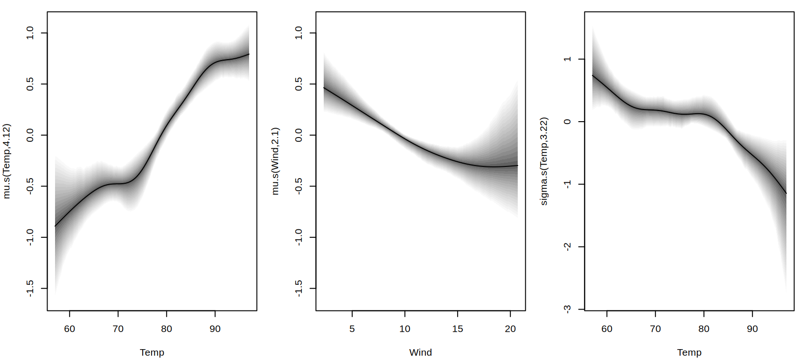
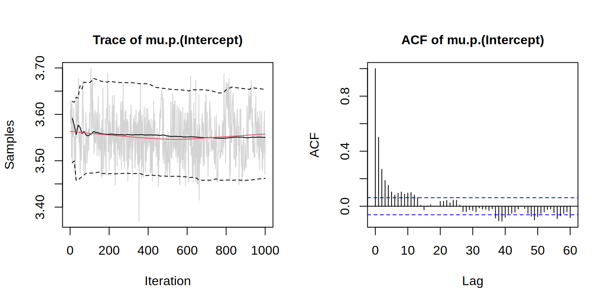
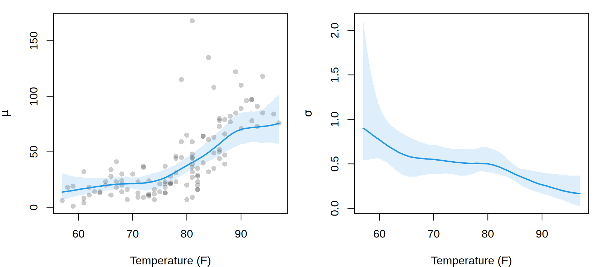

library("gamlss2")
air <- subset(airquality, !is.na(Ozone))Bayesian GAMLSS with gamlss2
Generalized additive models for location, scale, and shape can be estimated by penalized likelihood or by Bayesian sampling. In gamlss2, Bayesian estimation uses the same distributional formulas, family objects, and smooth terms as the usual fitting functions. The sampler follows the Bayesian additive model framework described by Umlauf et al. (2018).
There are two convenient ways to run the sampler. Function bamlss2() fits a model directly by MCMC, whereas mcmc() starts from an already fitted gamlss2 model. This vignette illustrates both workflows and shows how to inspect posterior effects, samples, and predictions.
1 Data and model
We use the airquality data and model daily ozone concentration. Ozone is positive and right-skewed, so a Gamma distribution is a useful starting point. The location parameter mu is modeled as a smooth function of temperature and wind speed, while the scale parameter sigma varies smoothly with temperature.
par(mar = c(4, 4, 1, 1))
plot(Ozone ~ Temp, data = air,
pch = 16, col = adjustcolor(1, 0.3),
xlab = "Temperature (F)", ylab = "Ozone")
The distributional formula is
f <- Ozone ~ s(Temp) + s(Wind) | s(Temp)The first right-hand side specifies the predictor for mu; the second specifies the predictor for sigma. The same formula can therefore be used for likelihood-based and Bayesian estimation.
2 Bayesian estimation
The convenience function bamlss2() sets up the model and runs the Bayesian sampler. By default, a small number of backfitting iterations is performed first to obtain starting values before MCMC sampling begins.
set.seed(1328)
m <- bamlss2(
f,
data = air,
family = GA,
n.iter = 1200,
burnin = 200,
thin = 1,
trace = FALSE
)The returned object inherits from class gamlss2, so the usual extractor and plotting methods remain available. In addition, it contains the retained MCMC samples.
summary(m)Call:
bamlss2(formula = f, n.iter = 1200, burnin = 200, thin = 1, data = air,
family = GA, trace = FALSE)
---
Family: GA
Link functions: log, log
*--------
Coefficients:
Mean 2.5% 97.5% Pr(<|0.01|)
mu.(Intercept) 3.5529 3.4620 3.654 <2e-16 ***
sigma.(Intercept) -0.7976 -0.9591 -0.623 <2e-16 ***
---
Signif. codes: 0 '***' 0.001 '**' 0.01 '*' 0.05 '.' 0.1 ' ' 1
---
Smooth terms:
edf alpha
mu.s(Temp) 4.1186 0.9255
mu.s(Wind) 2.1038 0.9348
sigma.s(Temp) 3.2250 0.7990
*--------
n = 116 df = 14.06 res.df = 101.94
Deviance = 932.216 DIC = 960.341 Null Dev. Red. = 0.53%
AIC = 960.341 elapsed = 2.42secThe sampler uses block Metropolis-Hastings updates for linear and smooth coefficients. Smooth terms are updated using penalized weighted least squares proposals, while smoothing variances are sampled by inverse Gamma or slice sampling. See ?BS for details of the sampler.
3 Posterior effects
Calling plot() displays the fitted additive effects. For a Bayesian fit these are obtained from the posterior samples stored in the fitted object.
par(mar = c(4, 4, 1, 1))
plot(m)
The MCMC draws are available in the samples component. For example, the intercept draws for the distribution parameters can be inspected directly.
cn <- grep("(Intercept)", colnames(m$samples),
fixed = TRUE, value = TRUE)
head(m$samples[, cn, drop = FALSE]) mu.p.(Intercept) sigma.p.(Intercept)
[1,] 3.610403 -0.8919850
[2,] 3.591819 -0.9260001
[3,] 3.580127 -0.9205795
[4,] 3.629737 -0.8691882
[5,] 3.622430 -0.7576894
[6,] 3.607646 -0.75416874 MCMC diagnostics
Posterior summaries are only useful if the sampler has explored the relevant part of the parameter space adequately. Trace plots and autocorrelation plots can be obtained with which = "samples". Here we inspect the intercept in the mu model.
plot(m, which = "samples", model = "mu",
terms = "(Intercept)", lag.max = 60)
The model and terms arguments can be used to select other coefficients. Smooth terms contain several basis coefficients, so inspecting a smooth can produce several trace and autocorrelation plots.
The values of n.iter, burnin, and thin used above are suitable for a compact example, but they are not a general convergence rule. For an applied analysis the chains should be inspected and the number of iterations increased when necessary.
Sampling can be extended by calling mcmc() again on the fitted object. The existing draws are retained and the newly retained draws are appended to samples, so the call can be repeated as necessary. The burnin argument applies to each additional run.
m <- mcmc(m,
n.iter = 1200,
burnin = 200,
thin = 1,
trace = FALSE
)5 Posterior predictions
For an object returned by bamlss2(), predict() uses the stored posterior samples when a summary function is supplied with FUN. We evaluate the model over the observed temperature range and keep wind speed fixed at its median.
nd <- data.frame(
Temp = seq(min(air$Temp), max(air$Temp), length.out = 100),
Wind = median(air$Wind)
)
post_interval <- function(x) {
q <- quantile(x, probs = c(0.025, 0.5, 0.975), na.rm = TRUE)
setNames(q, c("lower", "fit", "upper"))
}
pmu <- predict(m, newdata = nd, model = "mu",
FUN = post_interval)
psigma <- predict(m, newdata = nd, model = "sigma",
FUN = post_interval)
head(pmu) lower fit upper
1 6.669732 13.69218 30.56273
2 7.170987 14.04327 29.97314
3 7.728067 14.30183 29.41617
4 8.293329 14.55969 28.70630
5 8.900785 14.84674 28.40491
6 9.484501 15.13172 27.98030The resulting intervals describe posterior uncertainty in the distribution parameters. They are not prediction intervals for a future ozone observation.
op <- par(mfrow = c(1, 2), mar = c(4, 4, 1, 1))
plot(Ozone ~ Temp, data = air,
pch = 16, col = adjustcolor(1, 0.2),
xlab = "Temperature (F)", ylab = expression(mu))
polygon(c(nd$Temp, rev(nd$Temp)),
c(pmu$lower, rev(pmu$upper)),
border = NA, col = adjustcolor(4, 0.15))
lines(nd$Temp, pmu$fit, col = 4, lwd = 2)
plot(nd$Temp, psigma$fit, type = "n",
ylim = range(psigma[, c("lower", "upper")]),
xlab = "Temperature (F)", ylab = expression(sigma))
polygon(c(nd$Temp, rev(nd$Temp)),
c(psigma$lower, rev(psigma$upper)),
border = NA, col = adjustcolor(4, 0.15))
lines(nd$Temp, psigma$fit, col = 4, lwd = 2)
par(op)Other posterior summaries can be obtained by changing FUN. For example, posterior means and standard deviations are returned with
head(predict(m, newdata = nd, type = "parameter", FUN = mean)) mu sigma
1 15.18102 1.0008783
2 15.33981 0.9670859
3 15.51578 0.9355299
4 15.70839 0.9059356
5 15.91674 0.8780521
6 16.13956 0.8516485head(predict(m, newdata = nd, type = "parameter", FUN = sd)) mu sigma
1 6.820654 0.3747662
2 6.308822 0.3278221
3 5.861150 0.2868348
4 5.470681 0.2514449
5 5.131070 0.2213271
6 4.836545 0.19614336 Starting from a fitted gamlss2 model
Bayesian sampling can also be started from an existing likelihood-based fit. This is useful when a model has already been developed with gamlss2() and the same specification should subsequently be sampled. Function mcmc() uses the fitted coefficients and smoothing parameters as starting values and merges the posterior output back into the model object.
m <- gamlss2(f, data = air, family = GA, trace = FALSE)The corresponding MCMC fit is obtained with
set.seed(1328)
m2 <- mcmc(m,
n.iter = 1200,
burnin = 200,
thin = 1,
trace = FALSE
)Once fitted, m2 supports the same posterior summaries and plots as the object returned by bamlss2().
The fitted model supplied to mcmc() must retain the design information needed by the sampler. In particular, reduced model objects that discard this information cannot be used to restart sampling.
7 Practical remarks
The Bayesian and likelihood-based interfaces deliberately share the same model specification. This makes it possible to develop a distributional model with gamlss2() and switch to MCMC without rewriting its formula or family. For Bayesian fits, a few points are especially useful:
- set a seed when reproducible posterior draws are required;
- inspect trace and autocorrelation plots rather than relying only on posterior summaries;
- increase
n.iterwhen the retained draws do not provide adequate mixing; - use
predict(..., type = "parameter", FUN = ...)to summarize uncertainty from the stored posterior samples; and - distinguish posterior uncertainty in distribution parameters from predictive variation in the response.
The general GAMLSS formulation is described in Rigby and Stasinopoulos (2005). For the Bayesian additive distributional framework and the MCMC methodology, see Umlauf et al. (2018).
References
Rigby, R. A., and D. M. Stasinopoulos. 2005. “Generalized Additive Models for Location, Scale and Shape.” Journal of the Royal Statistical Society C 54 (3): 507–54. https://doi.org/10.1111/j.1467-9876.2005.00510.x.
Umlauf, N., N. Klein, and A. Zeileis. 2018. “BAMLSS: Bayesian Additive Models for Location, Scale and Shape (and Beyond).” Journal of Computational and Graphical Statistics 27 (3): 612–27. https://doi.org/10.1080/10618600.2017.1407325.